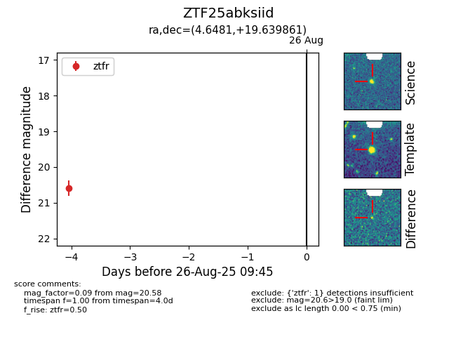

Target ZTF25abksiid at 2025-08-26 09:45, see:
FINK: fink-portal.org/ZTF25abksiid
Lasair: lasair-ztf.lsst.ac.uk/objects/ZTF25abksiid
ALeRCE: alerce.online/object/ZTF25abksiid
alt names
ZTF25abksiid (ztf,fink)
coordinates:
equatorial (ra, dec) = (4.6481,+19.63986)
galactic (l, b) = (112.4092,-42.55979)
photometry
last ztfr=20.58
1 ztfr detections
